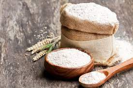
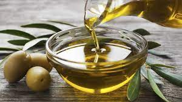
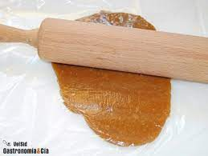

INGREDIENTES
1 kilogramo de harina de fuerza (también conocida como harina 00)
cucharadita de sal fina
2½ tazas de agua tibia
2 cucharadas soperas de aceite de oliva
30 gramos de levadura fresca
Utensilios:
Rodillo de madera
Papel de horno
Bol



Retornar